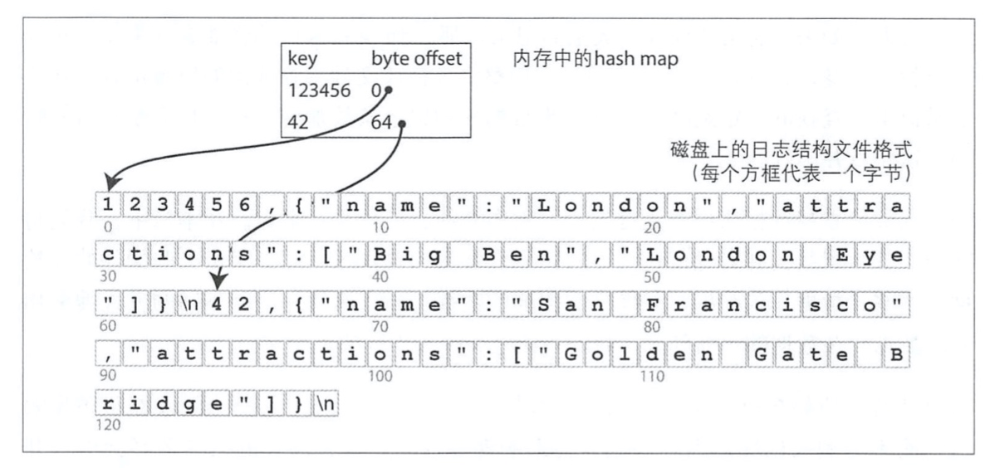
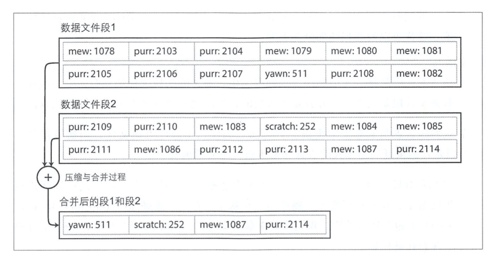
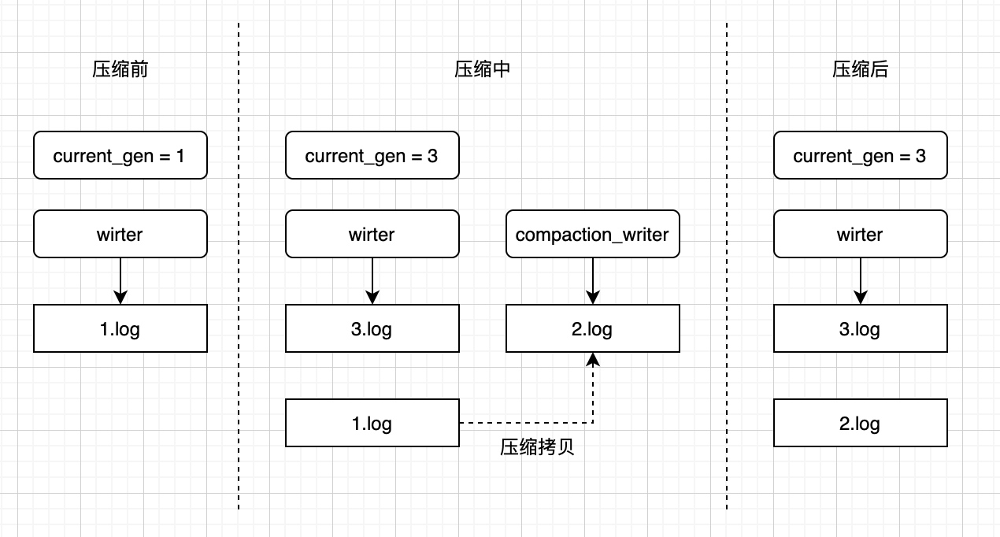

前言
新的KV数据库层出不穷，我们经常听说的KV数据库如RocksDb、Hbase等都是基于日志结构的存储引擎。最近我在看《数据密集型应用系统设计》，里面有一章专门在讲日志结构的存储引擎的演进过程，纯看理论不过瘾，所以我决定根据书里的理论动手自己实现一个KV数据库。同时，为了能顺便学习Rust，所以我使用了Rust来实现数据库。
除了参考《数据密集型应用系统设计》，我还参考了《pingcap/talent-plan》中使用Rust实现KV数据库的源码，恰好它的实现就是基于哈希索引和日志压缩的原理，跟书中的描述不谋而合。通过实现一个迷你数据库来学习和理解数据库的原理是一种学以致用的方式，能够帮助我们更加深入理解数据库原理。闲话不多说，开始正文。
最简单的数据库
在上正菜之前先来一道甜点，你知道最简单的数据库只需要几行代码吗？只需要两行，一行读取，一行写入。
#!/bin/bash
db_set() {
echo "$1,$2" >> database
}
db_get() {
grep "^$1," database | sed -e "s/^$1,//" | tail -n 1
}
可以尝试保存脚本，然后在shell中试一下。
➜ ~ source db.sh
➜ ~ db_set key1 value1
➜ ~ db_set key2 value2
➜ ~ db_set key1 value1
➜ ~ db_set key1 value2
➜ ~ db_get key1
value2
➜ ~ cat database
key1,value1
key2,value2
key1,value1
key1,value2
是不是很神奇，其实原理很简单，set的操作是将数据追加到文件末尾，get的操作是先grep找到所有key的数据，然后再取最后一条数据（tail -n 1）作为结果。仔细思考一下，这个数据库逻辑是正确的，而且还是持久化的。
这个数据库原理虽然简单，但是其中set使用日志追加的方式写入数据却是很多数据库的常用方式，因为日志追加性能非常好。相对的，get的方式性能就比较差了，需要从头到尾扫描整个文件，查询的开销是O(n)。
为了提高读取的性能，我们需要用到索引，基本的思路就是通过保存额外的元数据，根据这些元数据作为路标来快速定位到想要的数据。但是天下没有免费的午餐，维护索引需要在写入的时候额外写入其他数据，这会影响写入的性能。这里就涉及到存储系统中重要的权衡设计：适当的索引可以加速读取，但是每个索引都会减慢写入的速度。下面我们就给我们简单的数据库加上最简单的索引方式：哈希索引。
基于哈希索引的数据库
回想一下我们经常使用HashMap数据结构，哈希索引就是基于内存的HashMap来实现的，不同的是我们在内存里面使用HashMap的时候value都是直接存储原始数据的，对于数据库来说，如果你把所有的原始数据都直接存储到内存的话，这是不现实的。那怎么办呢？想想我们在编程里面常用的指针，是不是得到启发了？我们可以在内存里面保存原始数据的“指针”，即文件的字节偏移量和数据的长度。指针的占用量很小，这样我们完全可以把整个数据库的key的索引都放到内存里面，读取的时候直接找到key在文件中的偏移量，直接去磁盘读取数据。
借用书中的图示

这个哈希索引的原理听起来很简单，但是这可是在生产中被实际使用过的Bitcask数据库的核心原理。只要保证所有key都能放到内存里面，Bitcask就能提供高性能的读写，因为它的索引结构简单，写入也是内存操作，可以说索引的代价可以忽略不计，而读取只需要一次内存寻址，在有文件系统缓存时甚至不需要IO操作。在某些场景中这个数据库可以完爆其他所有数据库。
了解了基本原理之后，下面开始实操环节。
数据命令
首先定义一下我们数据库的基本功能：
- set：保存KV
- get：获取数据
- rm：删除数据
如果基于日志追加来做，我们的存储结构要怎么设计呢？肯定不能按照前面的简单数据库那样搞，因为光把数据存进去不能支持删除数据的功能。回想一下MySQL的RedoLog，我们可以得到一些启发。如果我们不记录原始数据，而是记录数据命令呢？例如，我们按照下面的格式来记录数据。
set: key1,value1
set: key2,value2
set: key1,value1
rm: key1
因为写入的操作只有两个：set和rm，所以我们可以定义两个数据命令，每次都把这些数据命令记录到日志里面，这样读取的时候读取到的就是数据命令，假设我们现在读取key2，实际上从磁盘读取到的数据是：set: key2,value2，这样我们就知道key2现在的最新值是value2，当读取key1的时候，从磁盘读取到的数据是rm: key1，那么意味着key1已经被删除了。
在Rust中数据命令的定义如下：
pub enum Command {
Set { key: String, value: String },
Remove { key: String },
}
数据写入
接下来定义我们的数据库对象，成员变量只有三个，一个读取器、一个写入器、一个索引。
pub struct KvStore {
reader: BufReaderWithPos<File>,
writer: BufWriterWithPos<File>,
index: HashMap<String, CommandPos>,
}
struct CommandPos {
pos: u64,
len: u64,
}
- BufReaderWithPos：带有寻址读取功能的读取器
- BufWriterWithPos：带有寻址写入功能的写入器
- CommandPos：记录命令的起始位置和长度
那么写入操作具体要做什么呢？看一下的代码注释
pub fn set(&mut self, key: String, value: String) -> Result<()> {
//构造一个写入命令
let cmd = Command::set(key, value);
//获取当前写入句柄的位置
let pos = self.writer.pos;
//通过serde把set命令序列化成json写入到文件中
serde_json::to_writer(&mut self.writer, &cmd)?;
//文件刷盘持久化
self.writer.flush()?;
if let Command::Set { key, .. } = cmd {
//记录写入命令的开始位置和长度
let cmd_pos = CommandPos { pos, len: self.writer.pos - pos };
//把当前key的最新命令位置记录到索引里面
self.index.insert(key, cmd_pos);
}
Ok(())
}
删除操作也是类似的：
pub fn remove(&mut self, key: String) -> Result<()> {
if self.index.contains_key(&key) {
//构造删除命令
let cmd = Command::remove(key);
//写入到文件
serde_json::to_writer(&mut self.writer, &cmd)?;
self.writer.flush()?;
if let Command::Remove { key } = cmd {
//从索引中删除key，这样就读取不到了。
self.index.remove(&key).expect("key not found");
}
Ok(())
} else {
Err(KvsError::KeyNotFound)
}
}
数据读取
数据读取主要是从索引里面获取命令位置，然后从磁盘读取命令返回结果。
pub fn get(&mut self, key: String) -> Result<Option<String>> {
//从索引中读取key的命令位置，如果读取不到说明key不存在
if let Some(cmd_pos) = self.index.get(&key) {
let reader = &mut self.reader;
//把读取器游标设置到命令的起始位置
reader.seek(SeekFrom::Start(cmd_pos.pos))?;
//指定读取的长度
let cmd_reader = reader.take(cmd_pos.len);
//读取命令
if let Command::Set {value, ..} = serde_json::from_reader(cmd_reader)? {
Ok(Some(value))
} else {
Err(KvsError::UnexpectedCommandType)
}
} else {
Ok(None)
}
}
数据加载
数据库每次启动都需要从文件中命令回放一遍，然后构建出内存索引才能开始使用。
fn load(reader: &mut BufReaderWithPos<File>, index: &mut HashMap<String, CommandPos>) -> Result<()> {
//设置文件游标到0，从开始遍历到文件末尾
let mut pos = reader.seek(SeekFrom::Start(0))?;
let mut stream = Deserializer::from_reader(reader).into_iter::<Command>();
//遍历命令
while let Some(cmd) = stream.next() {
let new_pos = stream.byte_offset() as u64;
match cmd? {
//如果是set命令就插入到索引中
Command::Set {key, ..} => {
index.insert(key, CommandPos{pos, len: new_pos - pos});
},
//如果是rm命令就从索引中删除key
Command::Remove {key} => {
index.remove(&key);
}
}
pos = new_pos;
}
Ok(())
}
至此，一个简单的基于哈希索引的数据库就完成了。完整代码可以参考：log_base
日志文件压缩
上面我们实现的数据库有一个明细的缺陷：如果使用时间很长的情况下，日志文件会非常大，可能把磁盘用光了。所以要想办法对日志文件进行压缩，可以发现对于相同的key在日志文件中会重复保存，而且实际上我们只会使用最新的命令。这部分没用的命令是可以删除掉的。因此，一个简单的日志压缩方式就是把重复的key删除掉只保留每个key最近的更新。

压缩日志文件实现会比较复杂，核心思路就是要将日志进行分段处理，当日志大小超过某个阈值时，新建一个日志用于写入，然后再新建一个日志将之前的全部日志遍历一遍进行压缩，最后将原始日志删除。
由于加入了分段日志的设计，所以现在要寻找一个key在磁盘的位置，需要增加一个维度：日志文件的序号。即命令位置的数据结构需要新增一个gen字段用于标识文件的序号。
struct CommandPos {
gen: u64,
pos: u64,
len: u64,
}
数据库的成员对象也需要修改，具体见注释。
pub struct KvStore {
//记录日志文件的目录
path: PathBuf,
//从单个读取器修改为多个日志读取器的集合，key是日志文件的序号
readers: HashMap<u64, BufReaderWithPos<File>>,
writer: BufWriterWithPos<File>,
index: HashMap<String, CommandPos>,
//记录当前写入的文件序号，压缩时写入的文件序号会自增切换到新的文件上
current_gen: u64,
//记录当前未压缩的命令大小
uncompacted: u64,
}
压缩日志的代码实现如下：
pub fn compact(&mut self) -> Result<()> {
//新增一个压缩日志序号，为当前序号+1
let compaction_gen = self.current_gen + 1;
//当前写入的日志序号+2，作为新的日志写入序号
self.current_gen += 2;
self.writer = self.new_log_file(self.current_gen)?;
let mut new_pos = 0;
//根据压缩日志序号创建一个写入器
let mut compaction_writer = self.new_log_file(compaction_gen)?;
//遍历当前索引的所有key
for cmd_pos in &mut self.index.values_mut() {
//获取当前key的关联的文件读取器
let reader = self.readers.get_mut(&cmd_pos.gen)
.expect(format!("Can't find reader: {}", &cmd_pos.gen).as_str());
//将读取器的游标切换到命令的起始位置
if reader.pos != cmd_pos.pos {
reader.seek(SeekFrom::Start(cmd_pos.pos))?;
}
//设置读取器读取的数据长度
let mut cmd_reader = reader.take(cmd_pos.len);
//把命令拷贝到压缩日志写入器中
let len = io::copy(&mut cmd_reader, &mut compaction_writer)?;
//更新索引中key的命令位置数据
*cmd_pos = CommandPos {gen: compaction_gen, pos: new_pos, len };
new_pos += len;
}
compaction_writer.flush()?;
//因为日志序号是从小到大增长的，要删除之前的日志只需要把小于压缩日志序号的文件都删除掉就行
let stale_gens: Vec<_> = self.readers.keys()
.filter(|&&gen| gen < compaction_gen)
.cloned().collect();
for stale_gen in stale_gens {
self.readers.remove(&stale_gen);
fs::remove_file(log_path(&self.path, stale_gen))?;
}
self.uncompacted = 0;
Ok(())
}
看代码可能不太好理解日志压缩的过程，下面我们举一个日志文件压缩的例子

压缩过程中让当前写入切换到3.log，可以保证写入不受影响，同时新增一个2.log作为压缩日志进行拷贝，边拷贝边更新索引，可以保证读取不受影响，等压缩完成之后，把1.log删除，平滑切换到新的日志上面。
完整的源码可以参考：log_compact，这里的实现为了简单起见没有按照书里面使用异步线程去做，是在set的时候判断未压缩的大小是否超过阈值进行同步压缩的，即会阻塞写入操作，这是一个可优化点，在后续的更新中会优化掉，但是日志压缩思路是一致的。
哈希索引的优缺点
哈希索引使用顺序写入的日志来追加式地记录每一个命令，看起来非常浪费存储空间：为什么不是直接原地更新文件，用新数据覆盖老数据呢？实际上追加式的设计是非常优秀的，主要原因有以下几个：
- 追加式主要使用顺序写入，性能非常高，比起覆盖式的随机写入要快得多。
- 追加式的写入在处理并发和崩溃恢复时要简单得多，例如不需要担心在重写值时发生崩溃的情况，追加式写入时如果崩溃了，只需要丢弃文件末尾有问题的数据，而覆盖式更新崩溃，你都不知道哪些数据是脏数据。
- 追加式的日志写入可以通过合并旧的日志文件解决碎片化的问题。
说了优点之后，也要说一下缺点：
- 哈希索引的实现要求所有key都放到内存里面，如果有大量的key存在，那么就没办法处理了。理论上可以把索引放到磁盘上面，但是这样读取速度就会受到影响。
- 无法支持快速的区间查询，只能遍历一遍所有key。
总结
本文主要说明了基于哈希索引的KV数据库的实现原理，同时给出了代码实现。基于追加式日志写入的哈希索引非常简单高效，同时也有一定的局限性。哈希索引只是KV数据库的起步，后续我们还会看到解决哈希索引缺点的新索引结构（LSM-tree），这些索引设计的思想是很多先进KV数据库（如Hbase、Cassandra）的基石。